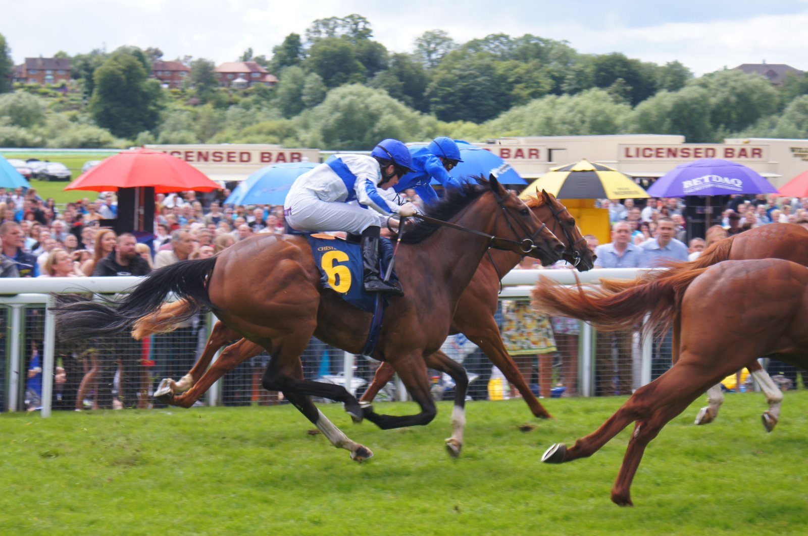

Huron Bleu y Alice's Saga exponen su imbatibilidad en Auteuil antes de las 48 h de l'Obstacle
Auteuil celebra el domingo una reunión de ocho carreras con varias preparatorias de las 48 h de l'Obstacle, que se disputarán el 14 y 15 de noviembre. Dos ejemplares de 3 años llegan invictos.

Huron Bleu suma tres salidas y tres victorias. La última fue una exhibición en el Prix Robert Lejeune (Grupo 3), y el domingo el potro vuelve a pista en el Prix Georges de Talhouët-Roy (Grupo 2), la carrera que prepara el Prix Cambacérès – Grande Course de Haies des 3 Ans (Grupo 1).
Su gran objetivo llega a final de temporada. Antes, Huron Bleu tiene la ocasión de llegar a ese compromiso sin una sola derrota.
Las potrancas de 3 años miden fuerzas en el Prix Magne (Grupo 3), puerta de acceso al Prix Magalen Bryant (Grupo 2). Alice's Saga se presenta también con un tres de tres, aunque con una novedad: será la primera vez que corra en Auteuil, y lo hará ante rivales de nivel. Ahí está la diferencia con Huron Bleu. Él defiende la racha en un terreno que ya conoce; ella, en una pista que pisa por primera vez.
El steeple-chase tiene su propia cita en el Prix Bayonnet (Listed), que ha recibido nueve inscripciones. La carrera es la preparatoria del Prix Maurice Gillois – Grand Steeple-Chase des 4 Ans (Grupo 1), una de las pruebas de referencia para los 4 años.
La reunión reúne a varios de los mejores ejemplares de su generación a pocas semanas de la gran cita del otoño. El programa incluye además el Prix Carmarthen (Grupo 3), otro de los platos fuertes de la jornada.
La primera de las ocho carreras sale a las 13.58.
Por Martín Larrañeta